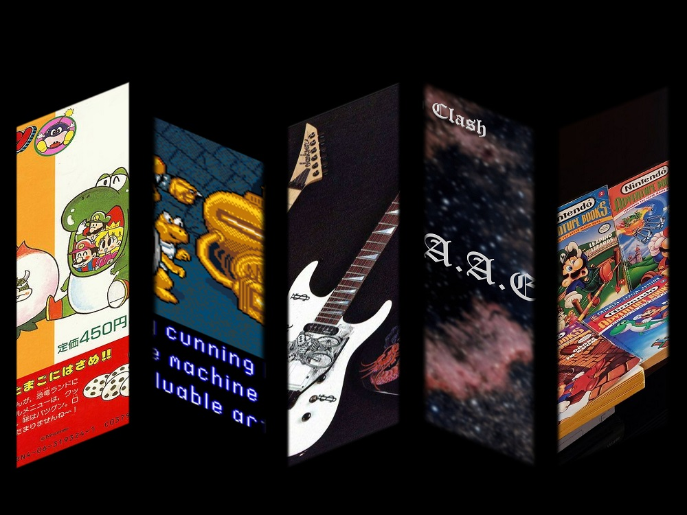

Hello and welcome to Mecha's 64 Castles. This is a personal blog, a fan-site for Mario and Nintendo, and a database on various subjects. Feel free to explore the tabs, or read the 'About Me' far below for some background!

What's new!
Imported all fan-fictions of C. Mechayoshi. (See: Works and Personal Collections tabs), Updated 'About Me' section (see far below),
Added obscure Charvels and Jacksons from Euro and Japanese markets, verified previously dubious info (See Charvel/Jackson page)
Reworking Paper Mario design comparison (See Articles)
MJ Series Rhoads RR24, Jeff Loomis Limited Kelly (See Charvel/Jackson page)
New mini articles on the Mario Oddities Smorgasbord #2 (See: Mario Oddities)
In progress project(s) January 2024:
- New articles
- New music (Check The Mario Clash page when complete)
- General site fixes, images, formatting, errors
Completed projects (newest to to oldest):
- Import all fan-fictions. (See Works and Personal Collections tab)
- Mario and Bowser: Frenemies Forever Redux (see: Works)
- Dates to Slammerverse projects. (See Works tabs)
- Hand And Arm Exhaustion 2 (H.A.A.E.) album. (See The Mario Clash tab)
- Mario and Bowser: Frenemies Forever 2, story and supplementary material (See Works tab)
- Mario Discovery Series (See Mario Oddities tab)
- Mario and Bowser: Frenemies Forever (original 2016) overview series. (see Works tab)
!This is a fansite/ personal blog/ database for zero profit! All assets used belong to their respective owners unless noted! This site is hand built from scratch in Web 1.0 style. (Obviously at that!) No pre-made assets or web building tools are used in ANY section. I am also the webmaster and sole contributor at the moment, so forgive small errors. If something is outright broken, please contact me.